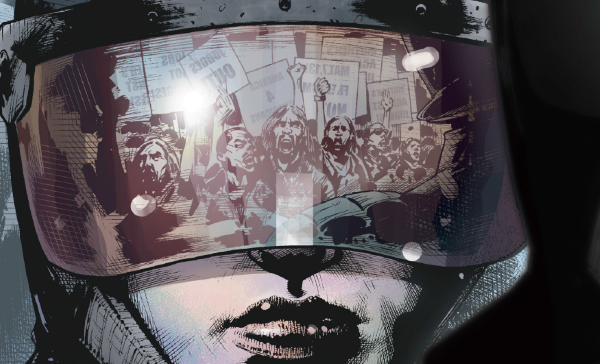

A dark, gritty depiction of the birth of the Judge system, set in 2035 and located in Boulder, Colorado. This serves as a realistic-seeming bridge between our present day and the fiction of Dredd's future world.
Art by John Higgins & Sally Hurst
| Story Title | Parts | Pages | w indicates a wraparound coverCovers | Year(s) | Issues | Writer | Artist | Colourist | Letterer |
|---|---|---|---|---|---|---|---|---|---|
From Judge DreddThe Paradigm Shift | 5 | 30 | 2085: Cliff Robinson & Dyland Teague 1 | 2018 | 2082-2086 | Michael Carroll | Jake Lynch | John Charles | Annie Parkhouse |
| Breaking Ground | 6 | 60 | M429: John Higgins 1 | 2020-2021 | M424-M429 | Mike Carroll | John Higgins | Sally Hurst | Simon Bowland |
| year | episodes | pages |
| 2002 | 0 | 0 |
| 2003 | 0 | 0 |
| 2004 | 0 | 0 |
| 2005 | 0 | 0 |
| 2006 | 0 | 0 |
| 2007 | 0 | 0 |
| 2008 | 0 | 0 |
| 2009 | 0 | 0 |
| 2010 | 0 | 0 |
| 2011 | 0 | 0 |
| 2012 | 0 | 0 |
| 2013 | 0 | 0 |
| 2014 | 0 | 0 |
| 2015 | 0 | 0 |
| 2016 | 0 | 0 |
| 2017 | 0 | 0 |
| 2018 | 5 | 30 |
| 2019 | 0 | 0 |
| 2020 | 4 | 40 |
| 2021 | 2 | 20 |
| 2022 | 0 | 0 |